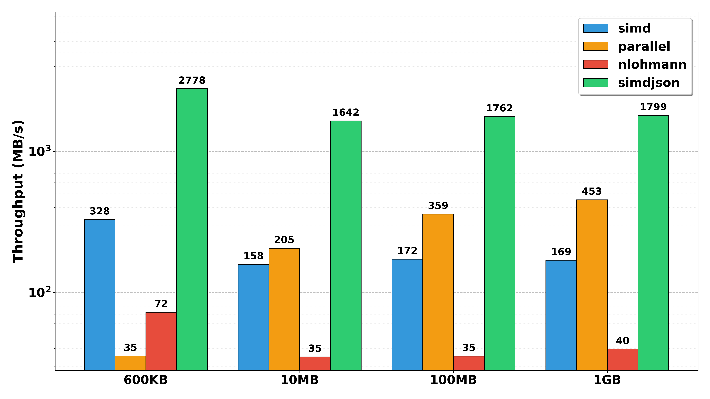

<div style="display: flex; justify-content: center; align-items: center; height: 700px;"> <div style="text-align: center; padding: 40px; background-color: white; border: 2px solid rgb(0, 63, 163); border-radius: 20px; box-shadow: 0 0 20px rgba(0,0,0,0.1);"> <h1 style="font-size: 48px; font-weight: bold; margin-bottom: 20px; color: #333;">Parallel JSON Parser</h1> <p style="font-size: 24px; color: #666;">CS121 Programming Project</p> <p style="font-size: 16px; color: #999; margin-top: 20px;">Hengyu Ai, Sizhe Zhao | 2025-12-30 </p> </div> </div> <!--s--> <div class="middle center"> <div style="width: 100%"> # Part.1 Background & Motivation </div> </div <!--v--> ## JSON is Everywhere - Portable, simple, represents almost any data structure. - Used by ~97% of API requests. ```json { "course": "CS121", "students": [ {"name": "Hengyu Ai"}, {"name": "Sizhe Zhao"} ] } ``` <div class="fragment"> **Downside?** - Reading and writing JSON can be slow. E.g., 40 MB/s - 100MB/s - Slower than fast disks or fast networks - More and more latge JSON files (chrome trace files, coco dataset, etc.) </div> <!--v--> ## Bottleneck Traditional parsers are inherently **serial**. <br/> - LL(Recursive descent): a lot of backtracking. - LR: state machine, unpredictable branching.x <br/> - Throughput is limited by single-core clock speed. - Parsing GBs of JSON sequentially is unacceptable. Goal: Utilize multi-core architectures to accelerate JSON parsing. <!--s--> <div class="middle center"> <div style="width: 100%"> # Part.2 Parallelized Parsing </div> </div> <!--v--> ## The Challenge of Parallelism - Ideal scenario: monoidal structure (e.g., parenthesis sequences) - data = unparsed prefix + parsed middle + unparsed suffix - if parsing is asscociative, we can split input and parse in parallel. <div class="fragment"> - Reality: JSON has context dependence. - State Toggle: Characters like `{`, `}`, or `,` have different meanings depending on whether they are inside a string. - Example: `{"key": "value, with comma"}` - We need a complex state machine to merge unparsed segments correctly. - We need to parse more than once (e.g., once with string context, once without). </div> <div class="fragment"> - The "Split" Problem: if we can split JSON into proper independent chunks, we can parse parallelly and merge results easily. </div> <!--v--> ## The Solution Overview - **Inspiration**: Derived from simdjson and Mison research. - **Core Philosophy**: Decouple structure identification from value parsing. - **Pass 1**: Structural Indexing (Data Parallel) - Scan raw bytes to identify structural characters (`{` `}` `[` `]` `:` `,`). - Handle quotes and escapes globally. - **Pass 2**: DOM Construction (Task Parallel) - Use indices to safely split the workload. - Parse values in parallel without context ambiguity. <!--v--> ## Phase 1: Structural Indexing - **Objective**: Identify structural characters while ignoring contents inside quotes. - **Bit-Level Parallelism**: - Instead of branching on every char, process blocks (e.g., 64-bit words). - **Algorithm**: - Identify all `"` (quotes) and `\` (escapes). - Compute a Mask via XOR / Prefix Sum operations. - Mask indicates: "Am I inside a string?" - **Result**: A flat vector of structural indices. - Transforms context-dependent stream into context-free locations. <!--v--> ## Phase 2: DOM Construction - **Objective**: Build the JSON DOM using structural indices. - **Thread-Level Parallelism(OpenMP)**: - Split top-level structures (objects/arrays) based on indices. - Each thread parses its assigned segment independently. (Simple stack-based parser) - Merge parsed segments into a complete DOM. - Offsets can be parallelly computed. - Write results parallelly into preallocated memory. <!--s--> <div class="middle center"> <div style="width: 100%"> # Part.3 Implementation Details </div> </div> <!--v--> ## "Tape" architecture - Inspired by simdjson's "tape" design. - **Objective**: Replace slow pointer-chasing with flat arrays. - **Design**: - Use a flat array (tape) to store parsed values sequentially. - Each entry encodes type and value (e.g., integer, string, object start). <!--v--> ## Memory Management - **Zero-Copy Parsing**: - Never copy raw input data, use `std::string_view` - **Preallocation**: - Estimate memory needs based on structural indices. - Preallocate an arena `std::pmr::monotonic_buffer_resource` for fast allocation. <!--s--> <div class="middle center"> <div style="width: 100%"> # Part.4 Performance Evaluation </div> </div> <!--v--> ## Benchmarks - Implementations: - Only SIMD - SIMD + OpenMP (Our full solution) - Baselines: - Industry-standard library: nlohmann/json - High performance library: simdjson - Datasets: - 600KB, 10MB, 100MB, 1GB JSON files <!--v--> ## Results <p></p> <!--s--> ## Summary - Inspiration: identify and separate context-dependent parsing from structure identification. - Two-pass algorithm: structural indexing + parallel DOM construction. - Performance: Significant speedup over traditional parsers - OpenMP implementation is slower in small files due to overhead. - Bottleneck: memory bandwidth and synchronization overhead. - Why simdjson is faster? - More optimized SIMD code - Hard-coded parsing tables and magic numbers - It's hard to reuse these optimizations in a general parser, but the monoidal way mentioned earlier is still applicable.